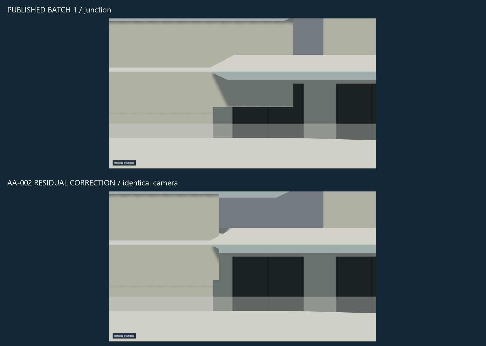
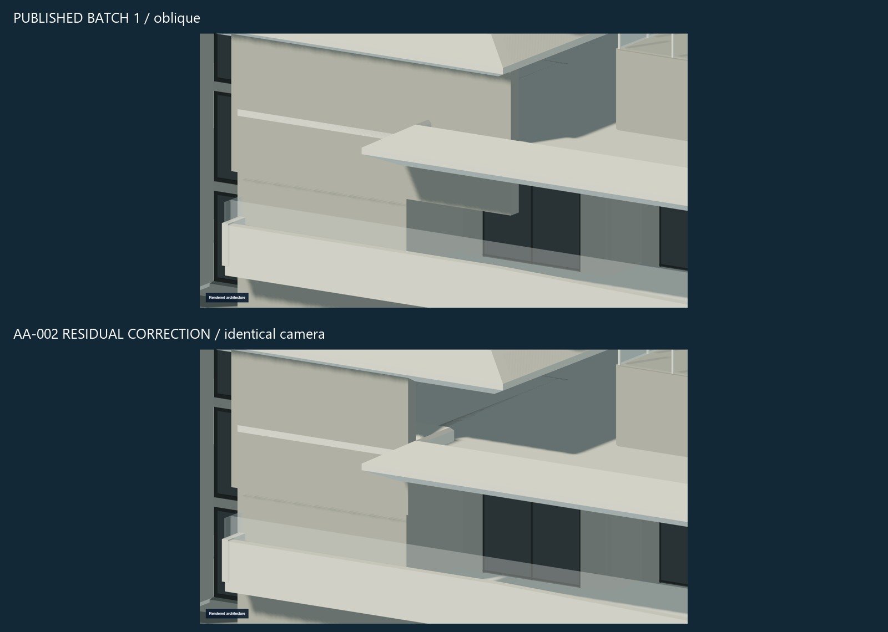
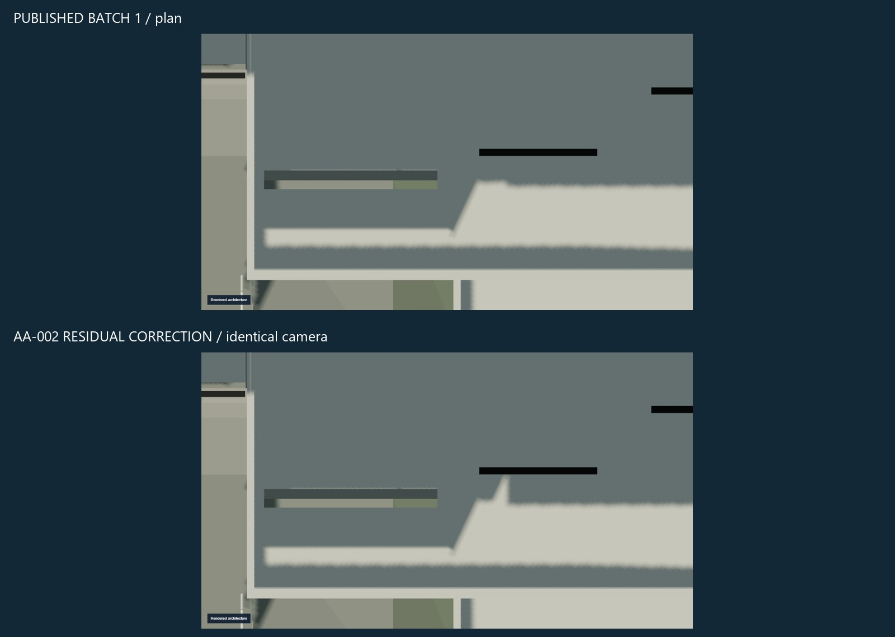
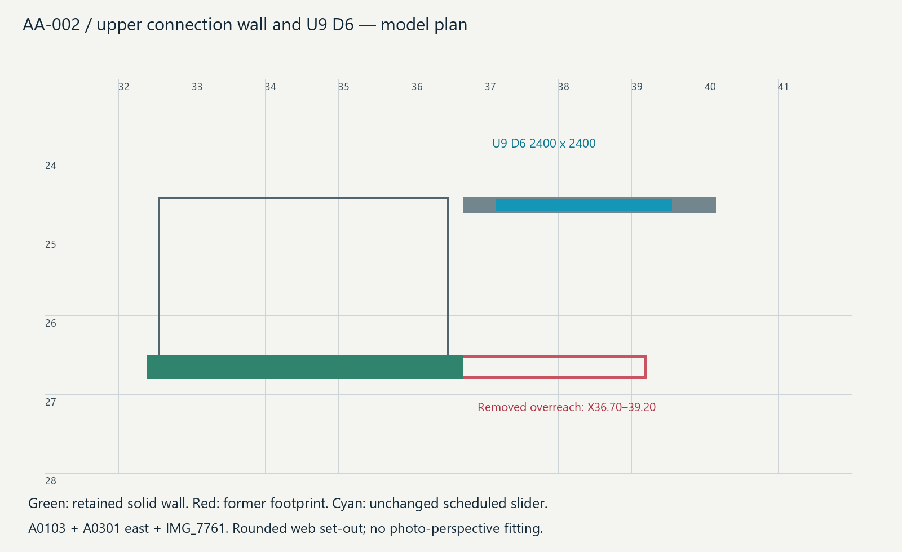

ANNA ATHINA · AA-002-RESIDUAL-SUCCESSOR · 2026-09-27
Latest architectural review.
AA-002 residual: the upper connection wall formerly projected across Unit9 D6. Its evidence-supported termination is corrected; all other geometry, including the Unit4 slab/D6/courtyard repair, is preserved. Human re-review is required. The unchanged Unit4 slab-registration evidence follows the new junction diagnostics.
Temporary public human-review copy. Not the production Raysons website. Source drawings and original site photographs are deliberately excluded.




